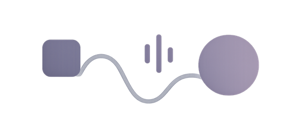

Book an audit for your web or mobile app project, and get guidance on integrating accessibility checks from design through to production. Treat the audit as your starting point for integrating accessibility early and consistently into your design and development cycle.
The Web Content Accessibility Guidelines (WCAG 2.1 and 2.2) define the international standard for building accessible digital products. These guidelines ensure your interfaces are perceivable, operable, understandable, and robust for the widest possible range of users.
Inclusivity: Ensures your product is usable by a wider audience, including people with a range of disabilities.
Legal compliance: Avoid risks related to non-compliance with accessibility regulations.
Improved user experience: Accessibility best practices improve usability for everyone.
Business advantages: Greater reach, higher satisfaction, and more consistent engagement.
Accessibility applies across web, mobile, and even documents such as PDFs. The audit evaluates how accessible your content is across devices, assistive technologies, and interaction methods.
Particular attention is given to embedded media.
A follow-up session answers any questions your team may have. Many issues identified in audits are simple component-level fixes, allowing teams to implement improvements quickly and efficiently.
Treat the audit as your starting point for integrating accessibility early and consistently into your design and development cycle.
If you'd like support improving your mobile and web app accessibility, feel free to contact me: